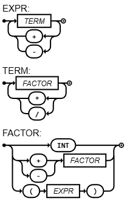

Uma base comum
Node é abstrata. value guarda o conteúdo; children guarda os filhos; evaluate() define o contrato implementado por cada tipo concreto.
A linguagem é a mesma. A arquitetura muda: o Parser constrói uma árvore; os nós calculam. Veja a AST crescer e acompanhe a avaliação de cada ramo.
Explorar o código ↗Python real · passos reversíveis · controles flutuantes BinOp +
/ \
IntVal 1 BinOp *
/ \
IntVal 2 IntVal 3O roteiro 4 não acrescenta operadores obrigatórios. Ele separa responsabilidades: o Parser deixa de fazer contas e passa a devolver nós de uma AST (árvore de sintaxe abstrata). A semântica acontece depois, em evaluate().
Node é abstrata. value guarda o conteúdo; children guarda os filhos; evaluate() define o contrato implementado por cada tipo concreto.
IntVal tem zero filhos, UnOp tem um e BinOp tem dois. A interface permite árvores com outros números de filhos nas próximas etapas.
Parser.run() retorna a raiz. A main chama root.evaluate(). Cada nó avalia seus filhos e aplica apenas sua própria operação.
A gramática, os tokens e as expressões válidas do roteiro 3 permanecem. Muda o tipo dos retornos do Parser: de inteiro para Node. Ainda não existem variáveis nem tabela de símbolos.
Fatorial com ! é extra credit e não está nesta versão-base. Ele deve ter maior precedência que os sinais unários: −3! vale −6. O fatorial de um operando negativo deve ser rejeitado.
Todas as classes, construtores e métodos da versão enxuta estão aqui, com função e propósito. Os auxiliares do seu material local também estão identificados, mas não fazem parte do código enxuto. O site usa nomes Python em snake_case: parseExpression = parse_expression, parseTerm = parse_term e assim por diante.
O Parser mantém a mesma descida EXPRESSION → TERM → FACTOR, mas cada retorno agora é um Node. Os parênteses determinam como ligar os nós e não viram nós próprios. Durante evaluate(), a árvore já está pronta: não é necessário chamar o Lexer ou o Parser novamente.
Em 1 + 2 * 3, a raiz é BinOp("+") e o filho direito é BinOp("*"). Em (1 + 2) * 3, a raiz passa a ser BinOp("*"). Não há um nó de parênteses: a ligação entre os nós já guarda o agrupamento.
O enunciado pede divisão inteira. Esta versão usa // do Python, que arredonda para baixo: 10 / 3 produz 3 e −2 / 4 produz −1. Assim, 3 − −2/4 resulta em 4. Não é truncamento em direção a zero.
O enunciado do roteiro 4 manda atualizar a URL do diagrama, mas não mudar a figura. Por isso mostramos abaixo a figura do roteiro 3; a mudança desta etapa está nos nós retornados, não nos caminhos sintáticos.

EXPRESSION = TERM, { ("+" | "-"), TERM } ;
TERM = FACTOR, { ("*" | "/"), FACTOR } ;
FACTOR = NUMBER | ("+" | "-"), FACTOR | "(", EXPRESSION, ")" ;
NUMBER = DIGIT, { DIGIT } ;
DIGIT = "0" | "1" | "2" | "3" | "4" | "5" | "6" | "7" | "8" | "9" ;Chaves significam zero ou mais repetições; | indica alternativas; ε é a instrução vazia.
Código completo baseado na estrutura do seu roteiro4.py, sem lacunas ou testes auxiliares. A árvore à direita vem dos objetos reais do Python. Primeiro aparecem subárvores separadas; depois elas se ligam. Na avaliação, o nó ativo recebe destaque e os retornos aparecem com →.
A linha destacada está prestes a executar. Os valores mostram o estado antes dela; o efeito aparece no passo seguinte. Ao entrar em um método, você verá a pilha de chamadas crescer.
Você pode experimentar mudanças no código abaixo e gerar outra execução. Mantenha a função main() como ponto de entrada. Restaurar recupera a versão enxuta original.
Carregando o código enxuto…
O exemplo já está preenchido. Cada passo mostrará a linha, a ação e os valores naquele instante.
Verde: nó ativo · →: retorno registrado · ramos soltos: construção em andamento. None em instruções significa ausência de retorno, não o valor de uma variável.
Valores alterados ganham destaque verde.
Ainda sem saída.
Escolha uma resposta para ver a explicação.
Baixe o Python completo na barra do depurador. Passe a expressão entre aspas:
python roteiro4-enxuto.py "1 + 2 * 3"Usa apenas a biblioteca padrão do Python. Esta é uma implementação didática do guia, não um gabarito oficial do professor.
No roteiro 5, a árvore ganha instruções e a execução passa a compartilhar uma tabela de símbolos.